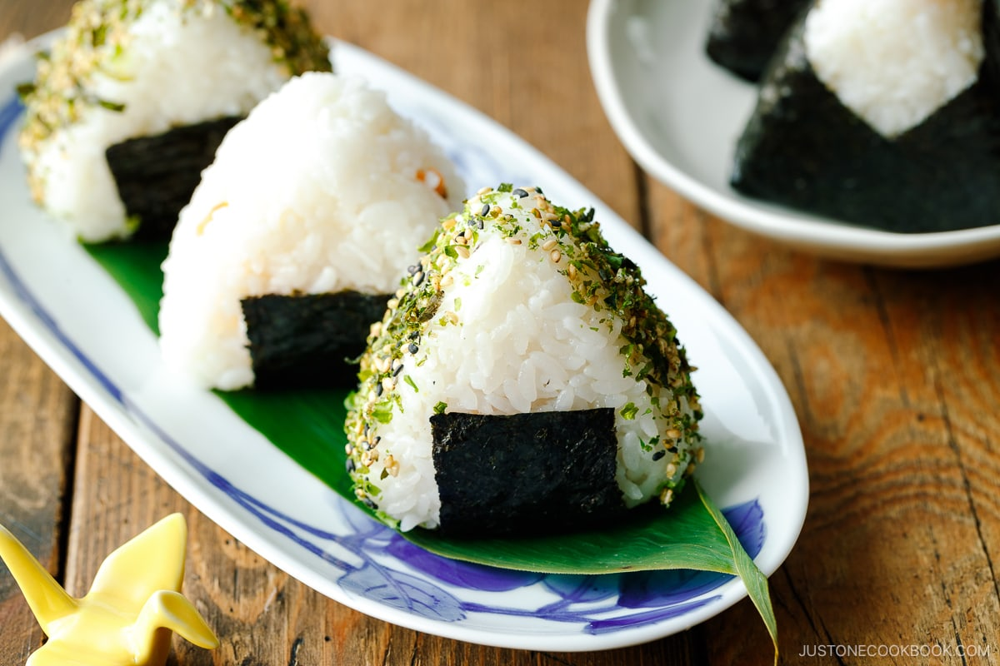

𝐒𝐮𝐬𝐡𝐢
𝐅𝐫𝐢𝐬𝐬, 𝐢𝐳𝐥𝐞𝐭𝐞𝐬 𝐡𝐚𝐥𝐚𝐤𝐤𝐚𝐥 𝐞𝐬 𝐳𝐨𝐥𝐝𝐬𝐞𝐠𝐞𝐤𝐤𝐞𝐥 𝐤𝐞𝐬𝐳𝐮𝐥𝐭 𝐞𝐭𝐞𝐥, 𝐚𝐦𝐞𝐥𝐲 𝐞𝐠𝐲𝐞𝐝𝐢 𝐢𝐳𝐞𝐥𝐦𝐞𝐧𝐲𝐭 𝐧𝐲𝐮𝐣𝐭.
𝐇𝐨𝐳𝐳𝐚𝐯𝐚𝐥𝐨𝐤:
- ❝𝐑𝐢𝐳𝐬❞
- ❝𝐒𝐮𝐬𝐡𝐢 𝐞𝐜𝐞𝐭❞
- ❝𝐅𝐫𝐢𝐬𝐬 𝐡𝐚𝐥❞
- ❝𝐓𝐞𝐧𝐠𝐞𝐫𝐢 𝐚𝐥𝐠𝐚❞
- ❝𝐖𝐚𝐬𝐚𝐛𝐢❞
- ❝𝐒𝐨𝐲𝐚 𝐬𝐳𝐨𝐬𝐳❞
- ❝𝐒𝐚𝐯𝐚𝐧𝐲𝐮𝐬𝐚𝐠❞
𝐊𝐮𝐥𝐨𝐧𝐥𝐞𝐠𝐞𝐬 𝐢𝐳𝐞𝐤:
❝𝐎𝐧𝐢𝐠𝐢𝐫𝐢❞
𝐀𝐳 𝐨𝐧𝐢𝐠𝐢𝐫𝐢 𝐞𝐠𝐲 𝐡𝐚𝐠𝐲𝐨𝐦𝐚𝐧𝐲𝐨𝐬 𝐣𝐚𝐩𝐚𝐧 𝐬𝐮𝐬𝐡𝐢 𝐟𝐨𝐫𝐦𝐚, 𝐚𝐦𝐞𝐥𝐲 𝐞𝐜𝐞𝐭𝐞𝐬 𝐫𝐢𝐳𝐬𝐠𝐨𝐦𝐛𝐨𝐜𝐫𝐚 𝐡𝐞𝐥𝐲𝐞𝐳𝐞𝐭𝐭 𝐟𝐫𝐢𝐬𝐬 𝐡𝐚𝐥𝐚𝐭 𝐯𝐚𝐠𝐲 𝐭𝐞𝐧𝐠𝐞𝐫 𝐠𝐲𝐮𝐦𝐨𝐥𝐜𝐬𝐞𝐢𝐭 𝐭𝐚𝐫𝐭𝐚𝐥𝐦𝐚𝐳.
❝𝐓𝐞𝐦𝐚𝐫𝐢❞
𝐀 𝐭𝐞𝐦𝐚𝐫𝐢 𝐞𝐠𝐲 𝐤𝐞𝐫𝐞𝐤 𝐬𝐮𝐬𝐡𝐢 𝐟𝐨𝐫𝐦𝐚, 𝐚𝐦𝐞𝐥𝐲 𝐤𝐢𝐬 𝐫𝐢𝐳𝐬𝐠𝐨𝐦𝐛𝐨𝐜𝐨𝐤𝐛𝐚 𝐳𝐚𝐫𝐭 𝐟𝐫𝐢𝐬𝐬 𝐡𝐚𝐥𝐚𝐭 𝐞𝐬 𝐳𝐨𝐥𝐝𝐬𝐞𝐠𝐞𝐤𝐞𝐭 𝐭𝐚𝐫𝐭𝐚𝐥𝐦𝐚𝐳, 𝐞𝐬 𝐠𝐲𝐚𝐤𝐫𝐚𝐧 𝐬𝐳𝐞𝐩 𝐝𝐢𝐳𝐞𝐤𝐤𝐞𝐥 𝐯𝐚𝐧 𝐝í𝐬𝐳í𝐭𝐯𝐞.
❝𝐔𝐫a𝐦𝐚𝐤𝐢❞
𝐀𝐳 𝐮𝐫𝐚𝐦𝐚𝐤𝐢 𝐞𝐠𝐲 𝐟𝐨𝐫𝐝𝐢𝐭𝐨𝐭𝐭 𝐭𝐞𝐤𝐞𝐫𝐜𝐬, 𝐚𝐦𝐞𝐥𝐲𝐛𝐞𝐧 𝐚 𝐫𝐢𝐳𝐬 𝐚 𝐤𝐮𝐥𝐬𝐞𝐣𝐞𝐧 𝐯𝐚𝐧, 𝐦𝐢𝐠 𝐚 𝐭𝐞𝐧𝐠𝐞𝐫𝐢 𝐚𝐥𝐠𝐚 𝐞𝐬 𝐚 𝐭𝐨𝐥𝐭𝐞𝐥𝐞𝐤, 𝐦𝐢𝐧𝐭 𝐩𝐞𝐥𝐝𝐚𝐮𝐥 𝐟𝐫𝐢𝐬𝐬 𝐡𝐚𝐥 𝐞𝐬 𝐳𝐨𝐥𝐝𝐬𝐞𝐠𝐞𝐤, 𝐛𝐞𝐥𝐮𝐥 𝐡𝐞𝐥𝐲𝐞𝐳𝐤𝐞𝐝𝐢𝐤.
𝐄𝐥𝐤𝐞𝐬𝐳𝐢𝐭𝐞𝐬:
𝐀 𝐬𝐮𝐬𝐡𝐢 𝐞𝐥𝐤𝐞𝐬𝐳𝐢𝐭𝐞𝐬𝐞𝐡𝐨𝐳 𝐚 𝐦𝐞𝐠𝐟𝐨𝐳𝐨𝐭𝐭 𝐬𝐮𝐬𝐡𝐢 𝐫𝐢𝐳𝐬𝐭 𝐞𝐜𝐞𝐭𝐭𝐞𝐥 𝐢𝐳𝐞𝐬𝐢𝐭𝐣𝐮𝐤, 𝐦𝐚𝐣𝐝 𝐥𝐚𝐩𝐫𝐚 𝐡𝐞𝐥𝐲𝐞𝐳𝐳𝐮𝐤, 𝐫𝐚𝐡𝐞𝐥𝐲𝐞𝐳𝐳𝐮𝐤 𝐚 𝐟𝐞𝐥𝐯𝐚𝐠𝐨𝐭𝐭 𝐡𝐚𝐥𝐚𝐭 𝐞𝐬 𝐳𝐨𝐥𝐝𝐬𝐞𝐠𝐞𝐤𝐞𝐭, 𝐬𝐳𝐨𝐫𝐨𝐬𝐚𝐧 𝐟𝐞𝐥𝐭𝐞𝐤𝐞𝐫𝐣𝐮𝐤, 𝐦𝐚𝐣𝐝 𝐬𝐳𝐞𝐥𝐞𝐭𝐞𝐤𝐫𝐞 𝐯𝐚𝐠𝐣𝐮𝐤, 𝐯𝐞𝐠𝐮𝐥 𝐰𝐚𝐬𝐚𝐛𝐢𝐯𝐚𝐥 𝐞𝐬 𝐬𝐨𝐲𝐚𝐯𝐚𝐥 𝐭a𝐥𝐚𝐥𝐣𝐮𝐤.